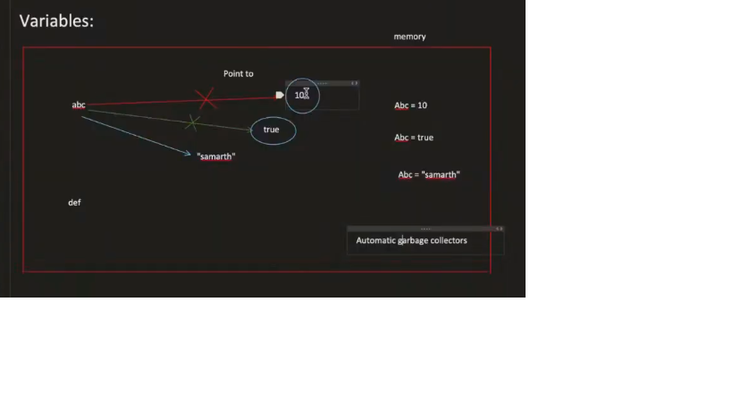
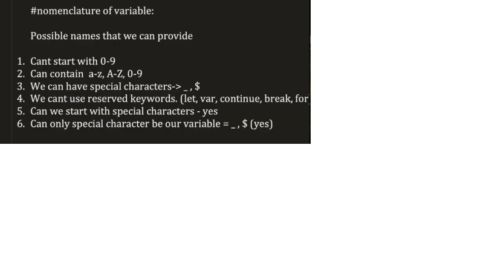
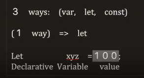
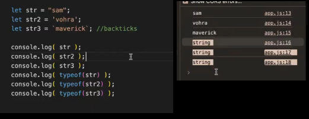
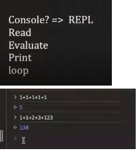

JavaScript Basics
Introduction to JavaScript
From this point onward, JavaScript becomes the most important part of development. HTML and CSS are for structure and design, but JavaScript is responsible for logic and behavior.
What Is A Programming Language?
HTML and CSS also give instructions, but they do not allow us to write logic. JavaScript allows decision making, conditions, and dynamic behavior.
Key Properties of JavaScript
Single Threaded

Think of a cashier in a shop. Only one person is served at a time.
Synchronous
It does not skip lines. Each line must finish before moving to the next.
Weakly Typed
Dynamically Typed
JavaScript decides the type when the code runs, not before.
Interpreted Vs Compiled Languages
- Compiled Languages
- Interpreted Languages
Compiled Languages
A compiler goes through the complete code from top to bottom and finds all errors before running the program.
Interpreted Languages
Each line is executed one after another. If an error occurs, execution stops immediately and the next lines are not executed.
Key Difference
| Compiled | Interpreted |
|---|---|
| Entire code runs together | Runs line by line |
| Errors shown before execution | Errors shown during execution |
| Faster after compilation | Slightly slower |
Instructor Insight
Variables & Types
Data Types
Primitive Data Types
Example analogy:
Paneer -> Milk -> Milk cannot be broken further -> Primitive
- Number
- String
- Boolean
- Undefined
- Null
- Symbol
- BigInt
Non-Primitive Data Types
Variables As Pointers
According to the instructor, variables in JavaScript do not behave like traditional containers. Instead, they act as pointers (references) to values stored in memory.

- abc = 10 -> variable points to value 10
- abc = true -> pointer shifts to new memory location
- abc = "samarth" -> pointer shifts again
Garbage Collection
When a variable stops pointing to a value, and no other variable is using it, JavaScript's garbage collector removes it from memory.
- 10 -> removed (unused)
- true -> removed (unused)
- "hello" -> remains
Advantages And Disadvantages
- Memory Efficient: Unused values are automatically removed
- Flexible: Variables can store any type of data
- Simple Syntax: No need to declare data types
- Dynamic Behavior: Easy to change values during runtime
- Beginner Friendly: No strict typing rules
- Less Control: Developer cannot manually manage memory
- Runtime Errors: Type issues are detected late
- Debugging Difficulty: Dynamic typing can cause unexpected bugs
Variable Nomenclature
In JavaScript, variables must follow certain naming rules. These rules ensure that the code is valid, readable, and understandable by both the developer and the JavaScript engine.

- Variable names cannot start with numbers (0-9)
- Variable names can contain alphabets (a-z, A-Z) and digits (0-9)
- Only two special characters are allowed: _ and $
- Reserved keywords cannot be used as variable names
- Variable names can start with _ or $

Checking Data Types Using typeof
In JavaScript, we use the typeof operator to check the type of a variable.

Console & Browser
Console In JavaScript

REPL stands for:
- Read
- Evaluate
- Loop
How Console Works
When you open the browser console, it continuously waits for your input. This is the Read phase.
When you press Enter, the console evaluates the expression. This is the Evaluate phase.
This is the Print phase. After printing, the console loops back and waits for the next input.
REPL Flow
- Console reads your input
- Evaluates the code
- Prints the result
- Loops back to wait for next input
Examples
Important Clarification
- Console is a tool
- JavaScript is the language
JavaScript In Browser
You can run JavaScript directly inside the browser console.